India didn't just look at the stars. It sent a spacecraft to touch them.
Welcome to Mission Control for Space Day — a hands-on journey through ISRO's greatest launches,
the physics of leaving Earth, the monsters we call black holes, the truth about "zero gravity",
and why your GPS is quietly using Einstein's homework every second of the day.
Every dot on this track is a real launch that took India further from home. Tap a mission to open its file.
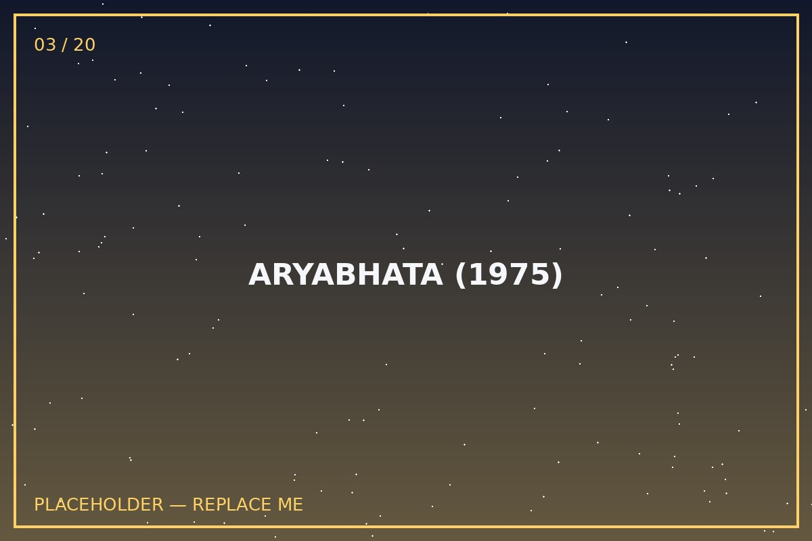
FIRST STEP
Aryabhata (1975)
In plain words: India's very first satellite — built at home, launched on a Soviet rocket because India didn't have its own big rockets yet. It studied X-rays from space and the upper atmosphere.
Why it matters: Before this, India was a country that watched space launches on the news. After this, India was a country that appeared in them. Every later mission stands on this one satellite's shoulders.
Named after the 5th-century mathematician who calculated Earth's rotation — a thousand years before telescopes existed.
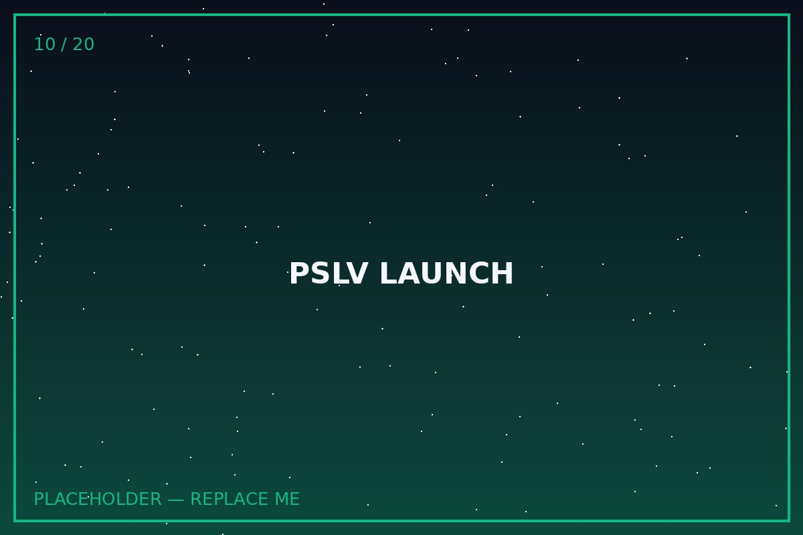
THE WORKHORSE
PSLV — Polar Satellite Launch Vehicle
In plain words: Think of PSLV as ISRO's reliable delivery truck. It's a rocket built to carry satellites into polar orbit — an orbit that passes near the North and South poles so a satellite can eventually scan the whole Earth as the planet spins beneath it.
Why it matters: PSLV made India a trusted launch service for the entire world, once famously carrying 104 satellites in a single flight. It's the same rocket family that helped send Chandrayaan-1 and Mangalyaan on their way.
A satellite doesn't need an engine to "orbit" — it's simply falling toward Earth so fast sideways that it keeps missing.
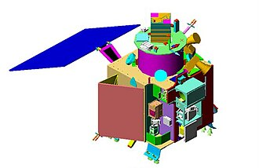
MOON, FIRST CONTACT
Chandrayaan-1 (2008)
In plain words: India's first Moon mission. It orbited the Moon and fired an impact probe onto the surface — and its instruments helped confirm water molecules on the Moon, a discovery that reshaped lunar science worldwide.
Why it matters: "Water on the Moon" sounds simple, but it changes everything about future Moon bases, fuel, and even drinking water for astronauts. India helped write that discovery.
The probe that hit the Moon's surface carried the Indian flag painted on its side — the tricolour has technically already landed on the Moon three times.
FIRST TRY, FIRST PLANET
Mangalyaan / Mars Orbiter Mission (2013)
In plain words: India sent a spacecraft to Mars and it worked — on the very first attempt, which almost nobody else has managed. It studies the Martian surface, atmosphere and mineral composition from orbit.
Why it matters: It was built on a budget famously smaller than the making of some Hollywood space movies, proving that careful engineering can beat brute-force spending.
Mangalyaan's total mission cost has often been compared to roughly the price of a big-budget film — a fun comparison, though ISRO's own reported figures are the accurate source.
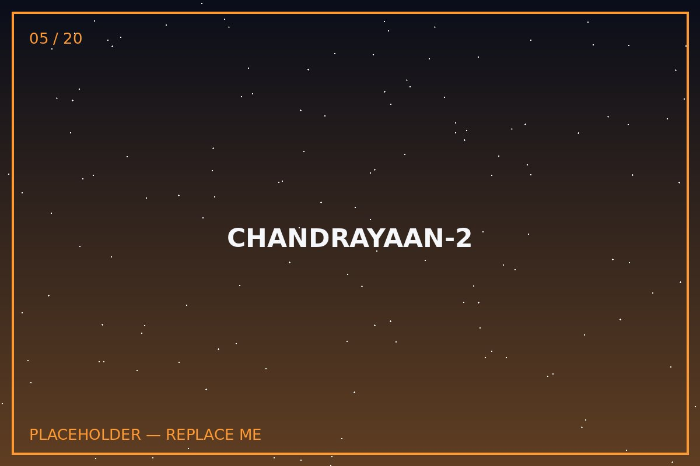
A HARD LESSON
Chandrayaan-2 (2019)
In plain words: This mission's orbiter reached the Moon successfully and is still working today, but the Vikram lander lost contact during its final descent and did not land safely.
Why it matters: Space exploration is one of the few fields where a "partial failure" is still treated as a national milestone — because the orbiter's data and the descent data both directly built the success of what came next.
Every hard landing lesson from Chandrayaan-2 was logged, studied and fixed — that's literally how Chandrayaan-3 succeeded.
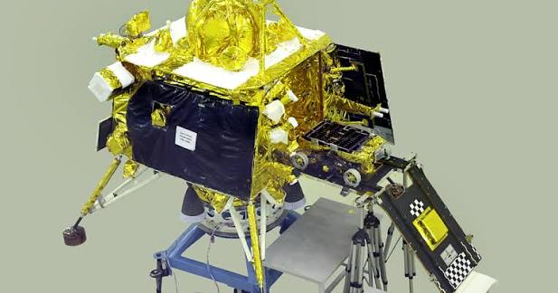
TOUCHDOWN
Chandrayaan-3 (2023)
In plain words: India's Vikram lander touched down safely near the Moon's south polar region, and the Pragyan rover rolled out to study the lunar soil — making India the first country to land near the lunar south pole.
Why it matters: The south pole is thought to hold water ice in permanently shadowed craters — a resource future missions may use for fuel and life support. Landing precisely there is a genuinely different, harder problem than landing near the Moon's equator.
The landing spot was officially named "Shiv Shakti Point" after the mission's success.
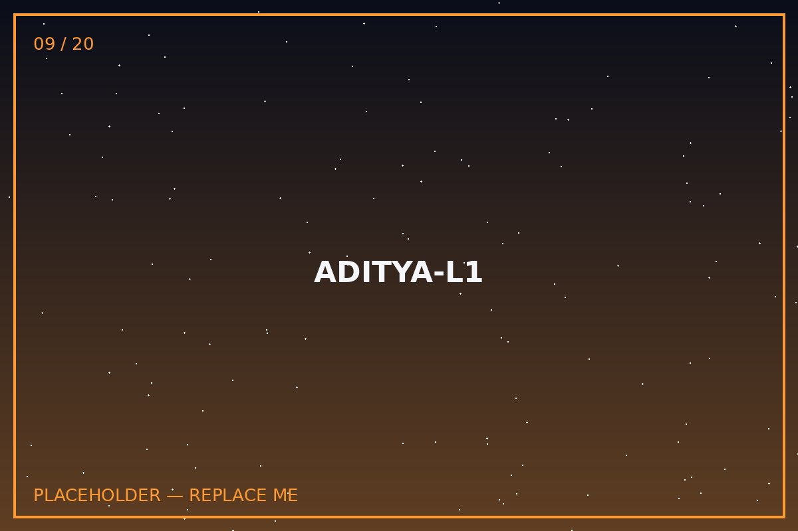
EYES ON THE SUN
Aditya-L1 (2023)
In plain words: India's first dedicated solar observatory. It travelled to a special parking spot called the L1 Lagrange point, about 1.5 million km from Earth, where the Sun's and Earth's gravity balance out so a spacecraft can hover with very little fuel.
Why it matters: Aditya-L1 watches the Sun's outer atmosphere (the corona) and solar storms that can knock out satellites and power grids back on Earth — practical, protective science, not just pretty photos.
L1 isn't "in orbit around the Sun" in the normal sense — it's a gravitational balance point, a bit like the calmest seat on a seesaw.
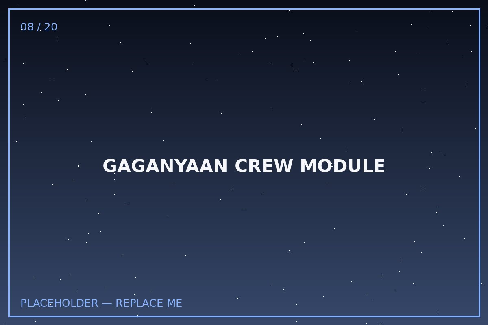
NEXT: HUMANS
Gaganyaan (In Progress)
In plain words: India's first crewed spaceflight programme, designed to send Indian astronauts (referred to as vyomanauts) into low Earth orbit and bring them home safely.
Why it matters: Sending hardware to space is hard. Sending a human and getting them back alive is an entirely different tier of engineering — life support, abort systems, re-entry, recovery — all of it has to work every single time.
Uncrewed test flights come first specifically so every abort and recovery system is proven before a human ever sits inside.
GROUND TRACK 02
How Do You Actually Leave a Planet?
Explained the way you'd explain it to a friend who's never thought about it — no equations required to get the idea, though a few are here for the curious.
1. Gravity is the boss you have to out-run
Earth's gravity is constantly pulling everything down. To stay in orbit instead of falling back, a rocket has to reach a sideways speed of roughly 28,000 km/h — that's not "going up fast", that's "going sideways so fast you keep missing the ground as you fall."
2. Why rockets come in stages
A rocket carries huge amounts of fuel just to lift its own fuel. Each stage burns out, detaches, and gets thrown away so the rocket isn't dragging dead weight — like unclipping empty water bottles mid-run instead of carrying them the whole race.
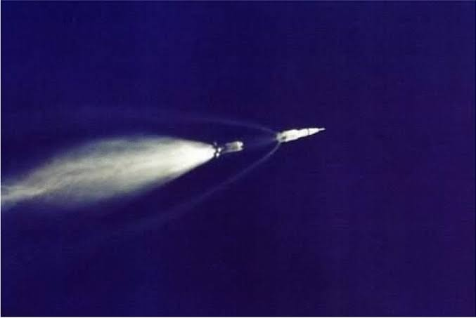
3. Orbit vs. escape
An orbit means you're going fast enough to fall around a planet forever without hitting it. Escape velocity (about 11.2 km/s from Earth) means you're going fast enough to leave the planet's gravity behind entirely — that's the speed needed for Moon and Mars missions.
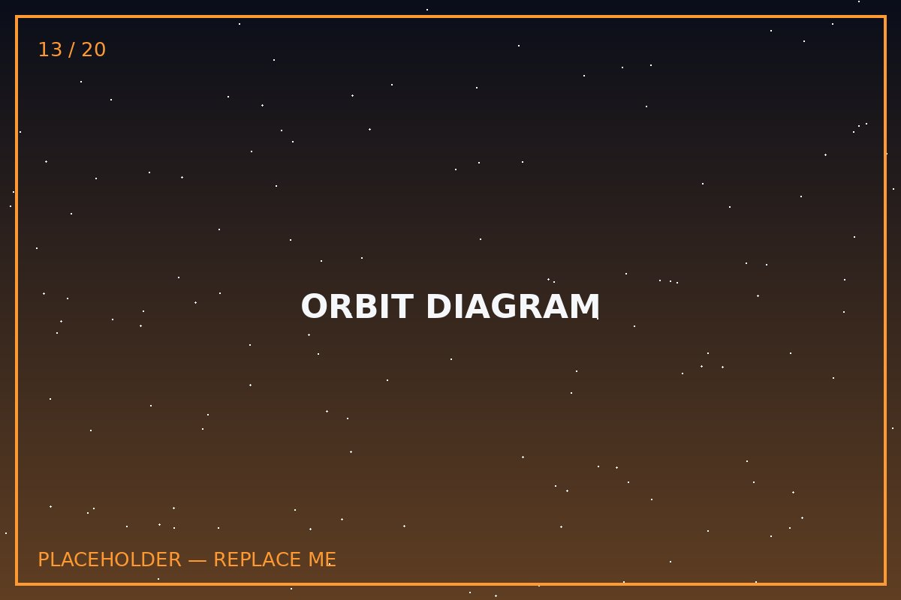
4. Getting somewhere is a game of patience
Spacecraft rarely fly in a straight line to their target. They ride curved paths (like the Hohmann transfer) that use the least fuel — which is why Mangalyaan took about 10 months to reach Mars instead of flying there directly.
🛰️ MISSION CONTROL HUMOR BREAK
Why did the rocket break up with the politician? Every time it tried to launch, the politician kept promising a "final decision next session."
— swap this line for your own joke in script.js, marked JOKES.travel
GROUND TRACK 03
Black Holes: Gravity That Wins Every Argument
Move your cursor near the canvas below to see how a gravity well bends everything nearby.
What actually is a black hole?
It's a region where so much mass has been packed into so little space that gravity becomes inescapable — not even light, the fastest thing in existence, can get out once it crosses the boundary called the event horizon.
Spaghettification (yes, that's the real term)
If you fell in feet-first, gravity would pull your feet far harder than your head, since your feet are closer to the centre. You'd be stretched into a long thin strand — scientists genuinely call this spaghettification.
They're not cosmic vacuum cleaners
A black hole only pulls in what gets close enough. If our Sun were magically replaced by a black hole of the same mass, Earth would keep orbiting exactly as before — just very, very dark.
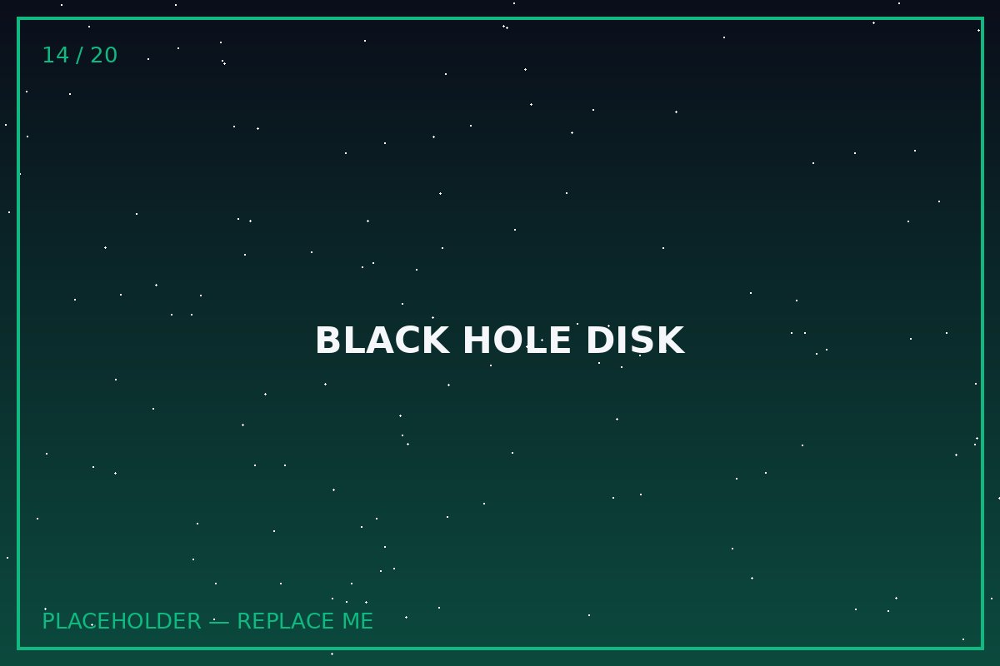
🛰️ MISSION CONTROL HUMOR BREAK
A black hole and a politician have the same skill: both can make a huge budget disappear without emitting a single straight answer.
— swap this line for your own joke in script.js, marked JOKES.blackhole
GROUND TRACK 04
"Zero Gravity" Is Actually a Bit of a Myth
Astronauts on the ISS aren't floating because gravity switched off. Gravity up there is still about 90% as strong as it is on your street.
🛰️🧑🚀🔧📎💧🍎
So why do things float?
The ISS and everything inside it — including the astronauts — are all in continuous free fall around Earth. They're falling together at the same rate, so relative to each other, nothing appears to fall at all. It's the same feeling as the drop of a fast elevator, just stretched out forever.
The proper term scientists use is microgravity, not "zero gravity" — because gravity is very much still there, doing exactly what it always does.
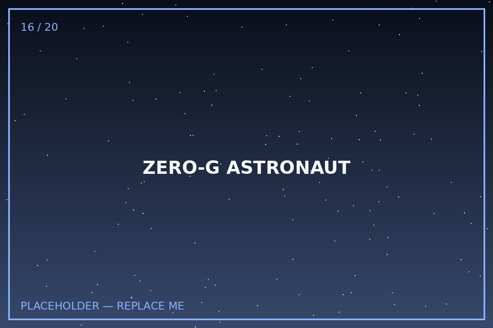
What microgravity does to the human body
Without weight pressing on bones and muscles, astronauts can lose bone density and muscle mass — which is why they exercise roughly two hours a day on the ISS. Fluids also shift upward toward the head, which is why astronauts often look slightly puffy-faced in photos.
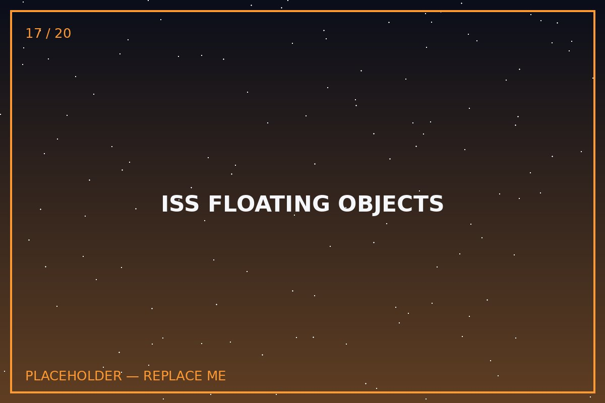
🛰️ MISSION CONTROL HUMOR BREAK
Astronauts in microgravity float because nothing is holding them down — which, coincidentally, is also how most politicians describe their campaign promises after election day.
— swap this line for your own joke in script.js, marked JOKES.zerog
GROUND TRACK 05
Space-Time & Relativity, Without the Headache
Two facts do all the heavy lifting: gravity bends time, and speed bends time. Try it yourself below.
Time isn't the same for everyone
Einstein showed that time runs slightly slower for anything moving very fast, or sitting in a stronger gravitational field. This isn't a trick of measurement — it's genuinely how the universe works, and it's been measured directly with atomic clocks.
Your phone uses this, right now
GPS satellites orbit fast (speeding up their clocks' apparent slowness a little) but sit in weaker gravity far from Earth (slowing them down a lot more). Uncorrected, GPS would drift by several kilometres a day. Engineers correct for relativity in the software — quietly, constantly, successfully.
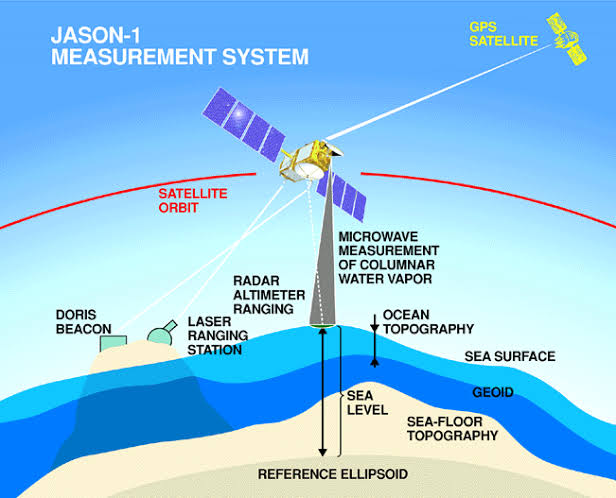
Try it: the Time Dilation Calculator
Drag the slider to set a spacecraft's speed as a fraction of the speed of light, and see how differently time would pass for the traveller versus someone waiting on Earth.
1 year on the ship= 1.00 years on Earth
Lorentz factor (γ)1.0050
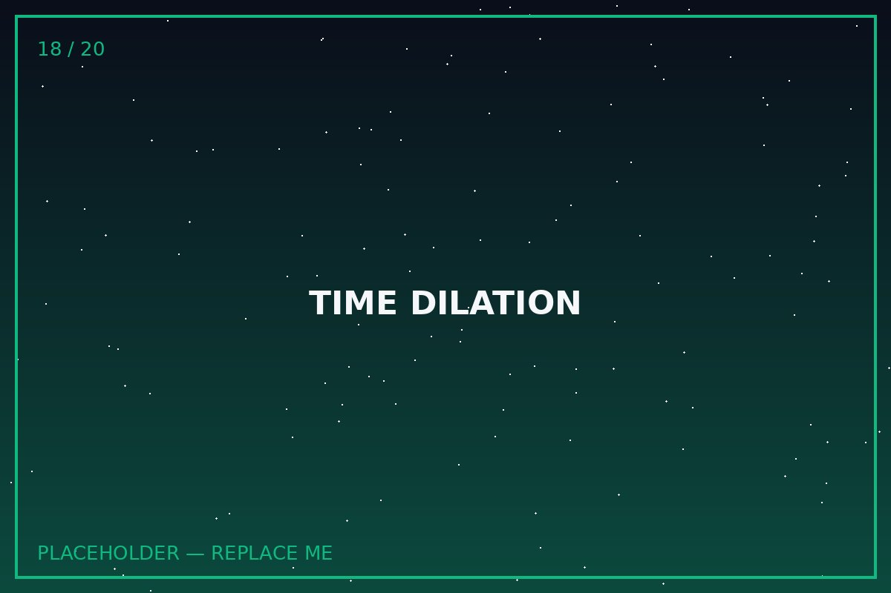
🛰️ MISSION CONTROL HUMOR BREAK
Time slows down the faster you go — which is also the only known way to make a politician's speech feel like it's lasting several geological eras.
— swap this line for your own joke in script.js, marked JOKES.relativity
GROUND TRACK 06
Full Mission Control Humor Reel
All placeholder jokes live in one place in script.js (look for the JOKES object) so you can replace them in one go without hunting through the HTML.
Loading a fresh one...
1 / 5
FINAL CHECKPOINT
Test Your Space IQ
Five quick questions. See if you were paying attention on the way up.